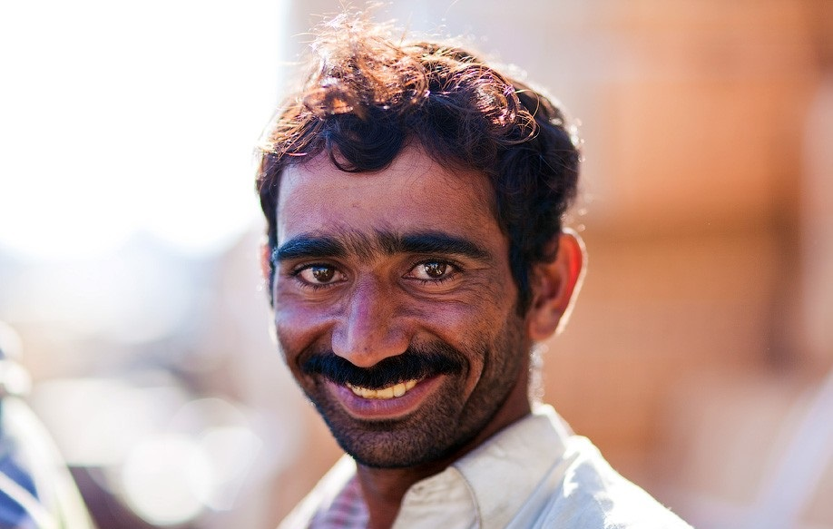

About Me
With over five years of experience as a frontend developer, I specialize in React and have extensive experience with TypeScript. I've contributed to internal product development for various companies and have a bit of experience working on open source projects. I have a keen interest in how information technology impacts business and am ready to communicate in English.Skills
- Java Script
- React
- Redux
- Jest (with RTL or Enzyme)
- React Query
- SCRUM
- English - C1
Experience
React Developer at Open AI
April 2023 - Present
Currently, I serve as a Team Lead for a team developing a product for an external client. My responsibilities include team management, architecture discussions, and facilitating communication between the development team and the business. My team has developed a component library for use in the project. Within the company, I have participated in various conferences as a speaker and conducted interviews.
April 2023 - Present
Currently, I serve as a Team Lead for a team developing a product for an external client. My responsibilities include team management, architecture discussions, and facilitating communication between the development team and the business. My team has developed a component library for use in the project. Within the company, I have participated in various conferences as a speaker and conducted interviews.
React Developer at SpaceX
June 2020 - April 2023
Initially, I joined the project as a key developer, where my primary tasks included developing new features, maintaining existing modules, code reviews, participating in grooming sessions, and discussing requirements with management. The project is aimed at managing processes across all Musk companies' libraries. After a few months, I transitioned into a lead role, where my duties expanded to include feature discussions for upcoming releases and technical solution deliberations with architects. I also participated in a series of interviews, interviewing senior-level candidates. Stack: React, Redux, Jest + RTL, TypeScript
June 2020 - April 2023
Initially, I joined the project as a key developer, where my primary tasks included developing new features, maintaining existing modules, code reviews, participating in grooming sessions, and discussing requirements with management. The project is aimed at managing processes across all Musk companies' libraries. After a few months, I transitioned into a lead role, where my duties expanded to include feature discussions for upcoming releases and technical solution deliberations with architects. I also participated in a series of interviews, interviewing senior-level candidates. Stack: React, Redux, Jest + RTL, TypeScript
Developer at Amazon
July 2018 - June 2020
I started as a middle frontend developer, responsible for developing new features and maintaining legacy code. Within the company, I grew into a key developer role in a team developing an internal product for company recruitment. My tasks included frontend development using React and occasionally fixing backend issues written in Node.js, although I always preferred frontend, so my backend experience remained limited. Stack: React, Redux, Jest + Enzyme
July 2018 - June 2020
I started as a middle frontend developer, responsible for developing new features and maintaining legacy code. Within the company, I grew into a key developer role in a team developing an internal product for company recruitment. My tasks included frontend development using React and occasionally fixing backend issues written in Node.js, although I always preferred frontend, so my backend experience remained limited. Stack: React, Redux, Jest + Enzyme
Code Example
.footer-container {
width: 100%;
background-color: #b31616;
padding: 10px;
box-sizing: border-box;
}
.footer-links {
display: flex;
justify-content: flex-end;
align-items: center;
gap: 20px;
position: relative;
height: 100px;
}
.footer-links a {
flex: 1;
max-width: 100px;
height: 100px;
}
#rsschool, #github {
width: 100px;
height: auto;
}
.list {
padding: 0px;
}
.list.skills {
list-style-position: inside;
list-style-type: disc;
}
.experience-name {
font-weight: bold;
}